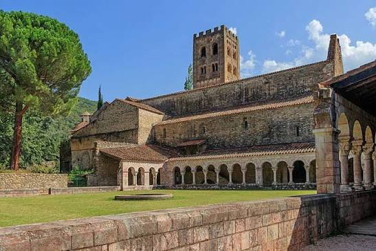

Abbaye
Saint-Michel
de Cuxa


⟹ Abbayes & Édifices Sacrés ⟸
L'histoire de Cuxa commence en réalité en amont de la vallée de la Têt. Vers 840, une communauté bénédictine s'établit à Saint-André d'Eixalada, près des actuelles gorges de Thuès. En 878, une crue catastrophique de la Têt détruit ce premier monastère. Les survivants, conduits par le religieux Protasius, se replient à Cuxa, où existe déjà une petite église dédiée à saint Germain d'Auxerre. Ce déplacement fonde durablement l'une des plus importantes abbayes de la Catalogne médiévale.

Protégée et dotée par les comtes de Cerdagne, la communauté s'enrichit rapidement. Plusieurs sanctuaires se succèdent au Xe siècle, puis l'abbé Garin (Warinus), à la tête de Cuxa à partir des années 960, lance un programme monumental d'une ampleur exceptionnelle. La grande église Saint-Michel est consacrée le 28 septembre 974. Avec ses vastes volumes et ses arcs outrepassés, elle constitue aujourd'hui l'un des témoins majeurs de l'architecture préromane européenne.
Sous Garin, Cuxa devient aussi un centre intellectuel et spirituel de premier plan, inséré dans les réseaux monastiques de l'Occident. Le monastère accueille notamment Gerbert d'Aurillac, savant réputé qui deviendra en 999 le pape Sylvestre II. Cette période place Cuxa au croisement des cultures catalane, franque et méditerranéenne.
Le XIe siècle est dominé par la personnalité de l'abbé Oliba (1008-1046), également abbé de Ripoll et évêque de Vic. Promoteur de la Paix et Trêve de Dieu, Oliba transforme profondément le monastère. Il fait aménager à l'ouest un ensemble complexe de sanctuaires superposés, comprenant la crypte et la chapelle circulaire de la Crèche, ainsi que la chapelle de la Trinité ; les deux grands clochers romans sont également liés à cette campagne, même si un seul subsiste aujourd'hui.
Au XIIe siècle, Cuxa se pare d'un remarquable décor sculpté en marbre rose du Conflent. Le cloître, probablement élevé sous l'abbatiat de Grégoire vers 1130-1140, déploie chapiteaux, colonnes et motifs où se mêlent feuillages, lions, créatures fantastiques et figures symboliques. Une tribune-jubé monumentale, apparentée par son art à celle de Serrabone, complétait cet ensemble. Cuxa devient ainsi l'un des foyers essentiels de la sculpture romane roussillonnaise.
Après des siècles de rayonnement, l'abbaye connaît un lent affaiblissement à la fin du Moyen Âge et à l'époque moderne. La Révolution française provoque la rupture décisive : la communauté est dispersée en 1791 et les bâtiments sont vendus. Privée d'entretien, l'église perd sa toiture au XIXe siècle ; le clocher nord s'effondre en 1838 et de nombreux éléments du cloître sont vendus ou réemployés dans les environs.
Cette dispersion prend une dimension internationale au début du XXe siècle. Le sculpteur et marchand américain George Grey Barnard acquiert de nombreux fragments romans provenant de Cuxa. Une partie rejoint ensuite les collections du Metropolitan Museum of Art : le célèbre Cuxa Cloister des Cloisters, à New York, rassemble aujourd'hui des éléments du cloître médiéval, tandis que d'autres fragments ont pu être récupérés et remontés sur le site français.
Le XXe siècle est celui de la renaissance. Des religieux reviennent à Cuxa en 1919 et d'importantes restaurations rendent progressivement sa cohérence au monument. Depuis 1965, une communauté bénédictine liée à Montserrat y maintient la présence monastique. Parallèlement, les recherches archéologiques, les restaurations et le Festival Pablo Casals ont redonné à Cuxa une place internationale, à la fois comme monument, lieu vivant et laboratoire majeur pour l'étude de l'art préroman et roman.
Repères documentaires : synthèse établie à partir de l'histoire officielle de l'abbaye, de l'Inventaire général du patrimoine culturel d'Occitanie et des notices du Metropolitan Museum of Art consacrées aux sculptures de Cuxa.
Figure majeure de la Catalogne médiévale, l'abbé Oliba fit de Cuxa un centre intellectuel et spirituel de premier plan, promoteur notamment de la « Paix et Trêve de Dieu ». Ce rayonnement se prolonge aujourd'hui à travers la présence de la communauté bénédictine de Montserrat, installée depuis 1965.
Un lieu où l'art roman naissant dialogue encore avec le silence des moines.
— Tradition du monastère de CuxaChaque été, le cloître accueille des concerts du Festival Pablo Casals, fondé en 1950 à Prades par le violoncelliste catalan en exil, qui choisit Cuxa pour son acoustique et la force symbolique du lieu.
Prades, ville voisine et siège historique du Festival Pablo Casals.
Villefranche-de-Conflent, cité fortifiée classée, à quelques kilomètres.
Le Train Jaune, qui traverse le Conflent et la Cerdagne voisine.
L'abbaye Saint-Martin-du-Canigou, à proximité, pour prolonger la découverte du patrimoine roman roussillonnais.